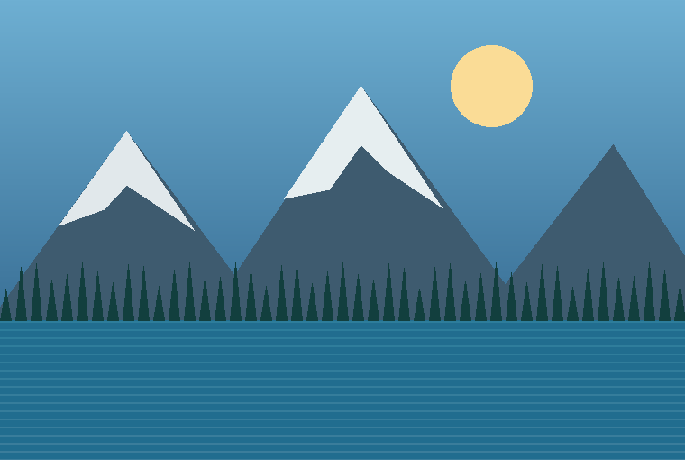
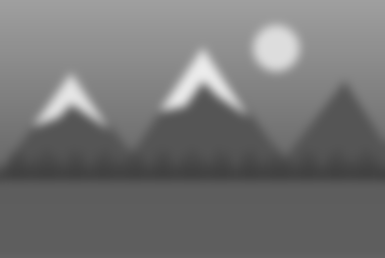
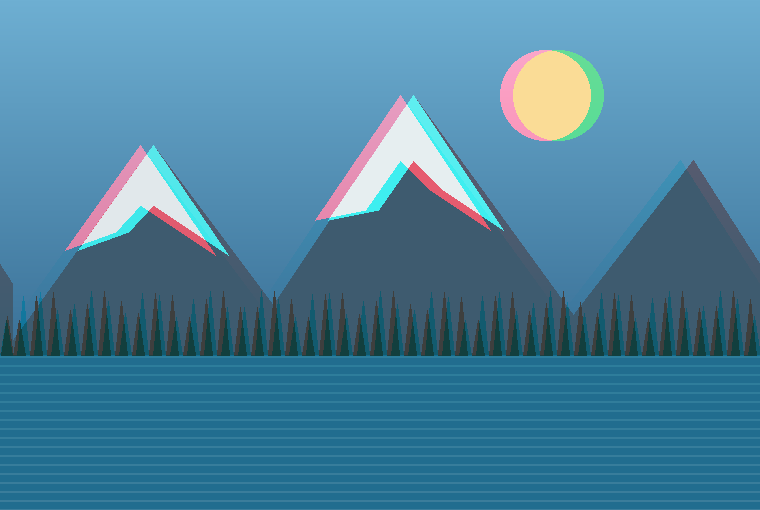

Exploring the conversion of 2D images into stereoscopic 3D visuals using depth estimation techniques.
Learn More ↓


Our graduation project aims to explore how a standard 2D image can be transformed into a stereoscopic 3D image. We plan to estimate depth information, create separate views for the left and right eyes, and visualize the result using compatible 3D glasses.
Images above are conceptual illustrations, not actual project results.
Start with a standard 2D image.
Estimate how near or far objects appear in the image.
Generate stereoscopic views for compatible 3D glasses.
Ali Baştaş
Eren Medetoğulları
Kadir Tekgül
Yücel Çimtay
Mehmet Evren Coşkun
Tolga Kurtuluş Çapın